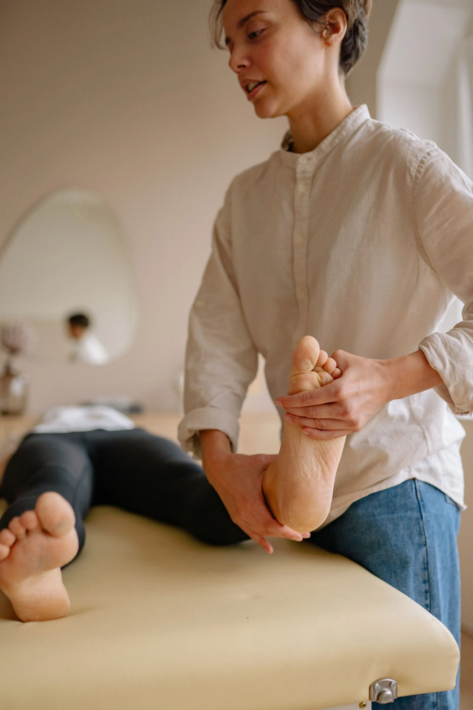

Imagem ilustrativa · não retrata o local ou a equipe
Imagem ilustrativa · não retrata o local ou a equipe01 / Massoterapia e terapias naturais · Rio Preto
O corpo fala, a massagem escuta.
Curai Naturais. A Curai Naturais oferece massoterapia e terapias naturais como rituais de autocuidado e reconexão, no bairro Eldorado, em São José do Rio Preto.
- Massoterapia
- Método Casula
- Rio Preto
 Imagem ilustrativa · não retrata o local ou a equipe
Imagem ilustrativa · não retrata o local ou a equipe02 / Conheça a proposta
Rituais de autocuidado em Rio Preto.
Método Casula
Método próprio apresentado no perfil, com foco em mobilidade, flexibilidade e consciência corporal. A indicação é combinada na sessão.
Massoterapia relaxante e terapêutica
Atendimento de massagem com cuidado e tempo, descrito pela terapeuta como um ritual.
Terapias naturais
Abordagens naturais que a Curai apresenta na bio do Instagram.
Produtos naturais
A Curai também divulga produtos naturais em destaque no perfil.
Agenda
Atendimento de terça a sábado, das 9h às 16h, segundo o Google.
 Imagem ilustrativa · não retrata o local ou a equipe
Imagem ilustrativa · não retrata o local ou a equipe03 / Trajetória & cuidado
Um momento só seu, no ritmo do seu corpo.
A Curai Naturais trata a massagem como um ritual de autocuidado: tempo, respiração e toque, com um texto próprio que fala de tensões que a pessoa nem percebe e de um momento só dela. O espaço fica na Avenida São Francisco, no Eldorado, e a terapeuta divulga o Método Casula, além de produtos naturais, no Instagram.
- Método próprio: Método Casula
- Rituais de autocuidado e reconexão
- Atendimento de terça a sábado, segundo o Google
- Nota 5,0 nas avaliações do Google

Imagem ilustrativa · não retrata o local ou a equipe04 / Seu próximo passo
Vamos conversar?
São José do Rio Preto/SPConversar pelo WhatsApp ↗
Ver mapa do endereço +
Consulte horários, disponibilidade e condições pelo WhatsApp.
Massoterapia e terapias naturais · Rio Preto